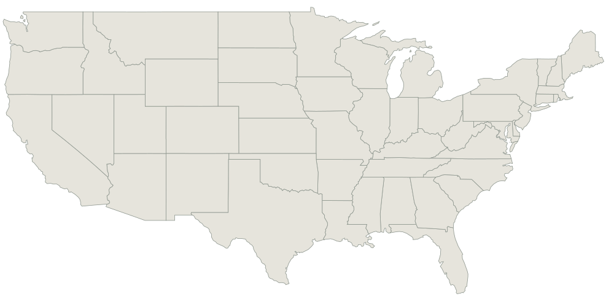

Loading the latest report…
THE DAILY BRIEF
Company desk
From laboratory lineage
to production pressure
Founding dates explain origin. Current stage and dated capital observations show movement toward deployment.Geography desk
Robotics is clustered,
but not centralized.
AI capital pulls toward the Bay Area. Full-stack institutions remain deep in Boston and Pittsburgh. Field operations spread toward customers.
PACIFIC
ATLANTIC
Select a cluster to inspect its concentration thesis.
Boundary geometry: PublicaMundi US States GeoJSON. Cluster markers represent tracked company bases and institutional hubs, not market size.
Hiring desk